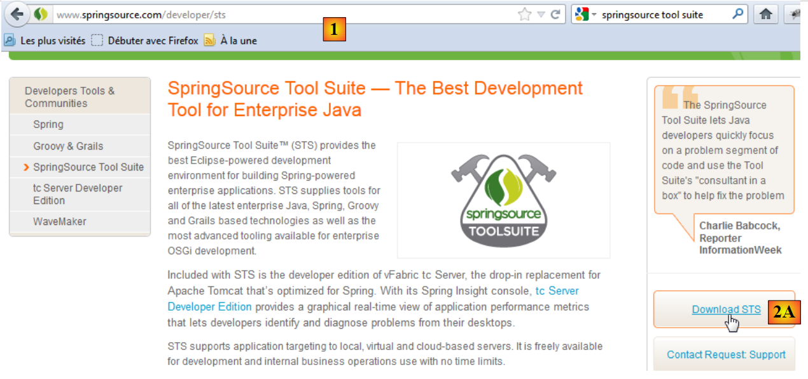
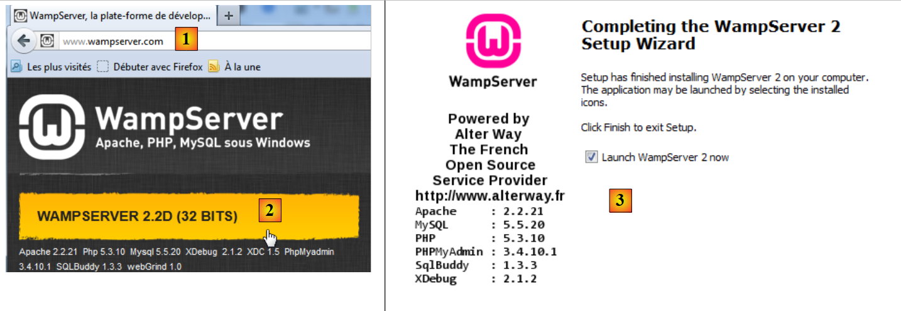
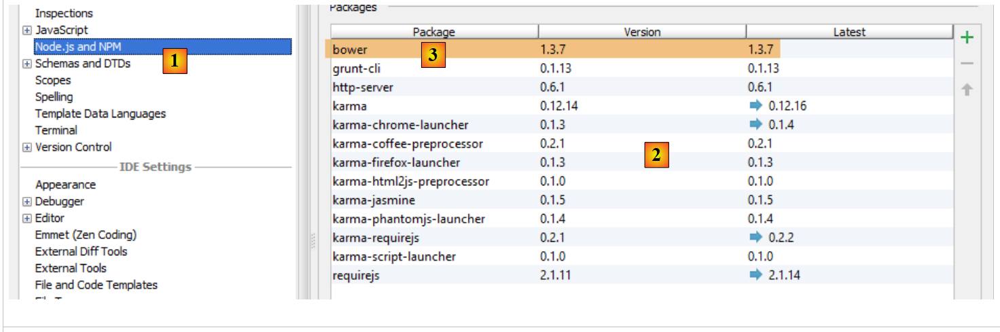
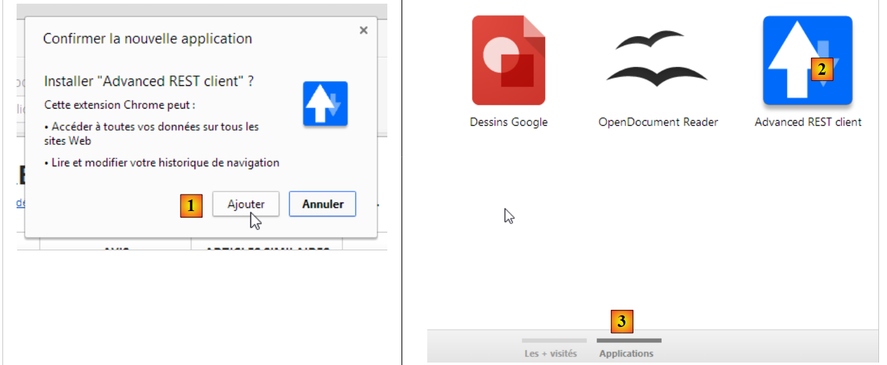

6. Appendici
Qui spieghiamo come installare gli strumenti utilizzati in questo documento su macchine Windows 7.
6.1. Installazione di STS (Spring Tool Suite)
Installeremo SpringSource Tool Suite [http://www.springsource.com/developer/sts], un ambiente Eclipse preconfigurato con numerosi plugin relativi al framework Spring e con una configurazione Maven preinstallata.
 |
- Visita il sito web di SpringSource Tool Suite (STS) [1] per scaricare la versione attuale di STS [2A] [2B].
 |
 |
- Il file scaricato è un programma di installazione che crea la struttura di directory [3A] [3B]. In [4], avviamo l'eseguibile,
- in [5], la finestra dell'area di lavoro dell'IDE dopo aver chiuso la finestra di benvenuto. In [6], viene visualizzata la finestra dei server delle applicazioni,
 |
- in [7], la finestra dei server. È registrato un server. Si tratta di un server VMware compatibile con Tomcat.
L'utilizzo di STS all'interno dell'applicazione è spiegato nella sezione 1.3.2.
6.2. Installazione di [ WampServer]
[WampServer] è un pacchetto software per lo sviluppo in PHP/MySQL/Apache su un computer Windows. Lo useremo esclusivamente per il DBMS MySQL.
 |
- Sul sito web di [WampServer] [1], scegli la versione appropriata [2],
- Il file eseguibile scaricato è un programma di installazione. Durante l'installazione ti verranno richieste diverse informazioni. Queste non riguardano MySQL, quindi puoi ignorarle. Al termine dell'installazione appare la finestra [3]. Avvia [WampServer],
 |
- in [4], l'icona di [WampServer] appare nella barra delle applicazioni in basso a destra dello schermo [4],
- quando si fa clic su di essa, appare il menu [5]. Consente di gestire il server Apache e il DBMS MySQL. Per gestire quest'ultimo, utilizzare l'opzione [PhpMyAdmin],
- che apre la finestra mostrata di seguito,

Forniremo alcuni dettagli sull'uso di [PhpMyAdmin]. Nella sezione 1.3.1, mostriamo come utilizzarlo per creare il database dell'applicazione.
6.3. Installazione di [WebStorm]
[WebStorm] (WS) è l'IDE di JetBrains per lo sviluppo di applicazioni HTML/CSS/JS. L'ho trovato perfetto per lo sviluppo di applicazioni Angular. Il sito di download è [http://www.jetbrains.com/webstorm/download/]. Si tratta di un IDE a pagamento, ma è disponibile per il download una versione di prova di 30 giorni. Esistono versioni personali e per studenti a prezzi accessibili.
Il suo utilizzo all'interno dell'applicazione è descritto nella sezione 1.3.3. Per installare le librerie JS all'interno di un'applicazione, WS utilizza uno strumento chiamato [bower]. Questo strumento è un modulo di [node.js], una raccolta di librerie JS. Inoltre, le librerie JS vengono recuperate da un repository Git, il che richiede un client Git sul computer che esegue il download.
6.3.1. Installazione di [node.js]
Il sito di download di [node.js] è [http://nodejs.org/]. Scaricare il programma di installazione ed eseguirlo. Per ora non occorre fare altro.
6.3.2. Installazione dello strumento [bower]
Lo strumento [bower], che consente di scaricare librerie JavaScript, può essere installato in diversi modi. Lo installeremo dalla riga di comando:
C:\Users\Serge Tahé>npm install -g bower
C:\Users\Serge Tahé\AppData\Roaming\npm\bower -> C:\Users\Serge Tahé\AppData\Roaming\npm\node_modules\bower\bin\bower
bower@1.3.7 C:\Users\Serge Tahé\AppData\Roaming\npm\node_modules\bower
├── stringify-object@0.2.1
├── is-root@0.1.0
├── junk@0.3.0
...
├── insight@0.3.1 (object-assign@0.1.2, async@0.2.10, lodash.debounce@2.4.1, req
uest@2.27.0, configstore@0.2.3, inquirer@0.4.1)
├── mout@0.9.1
└── inquirer@0.5.1 (readline2@0.1.0, mute-stream@0.0.4, through@2.3.4, async@0.8
.0, lodash@2.4.1, cli-color@0.3.2)
- riga 1: il comando [node.js] che installa il modulo [bower]. Affinché il comando funzioni, l'eseguibile [npm] deve trovarsi nel PATH del computer (vedi paragrafo seguente);
6.3.3. Installazione di [Git]
Git è un sistema di controllo delle versioni del software. Esiste una versione per Windows chiamata [msysgit] disponibile all'URL [http://msysgit.github.io/]. Non useremo [msysgit] per gestire le versioni della nostra applicazione, ma semplicemente per scaricare librerie JS presenti su siti come [https://github.com], che richiedono uno speciale protocollo di accesso fornito dal client [msysgit]
La procedura guidata di installazione prevede diversi passaggi, tra cui i seguenti:
 |  |
Per le altre fasi di installazione, è possibile accettare i valori predefiniti forniti.
Una volta installato Git, verificare che l'eseguibile sia presente nel PATH del computer: [Pannello di controllo / Sistema e sicurezza / Sistema / Impostazioni di sistema avanzate]:
 |  |
La variabile PATH ha questo aspetto:
D:\Programs\devjava\java\jdk1.7.0\bin;D:\Programs\ActivePerl\Perl64\site\bin;D:\Programs\ActivePerl\Perl64\bin;D:\Programs\sgbd\OracleXE\app\oracle\product\11.2.0\client;D:\Programs\sgbd\OracleXE\app\oracle\product\11.2.0\client\bin;D:\Programs\sgbd\OracleXE\app\oracle\product\11.2.0\server\bin;...;D:\Programs\javascript\node.js\;D:\Programs\utilitaires\Git\cmd
Verificare che:
- il percorso della cartella di installazione di [node.js] sia presente (in questo caso D:\Programmi\javascript\node.js);
- il percorso dell'eseguibile del client Git sia presente (in questo caso D:\Program Files\Utilities\Git\cmd);
6.3.4. Configurazione di [WebStorm]
Controlliamo ora la configurazione di [WebStorm]
 |  |
 |
In alto, seleziona l'opzione [1]. L'elenco dei moduli [node.js] già installati appare in [2]. Se hai seguito la procedura di installazione precedente, questo elenco dovrebbe contenere solo la riga [3] relativa al modulo [bower].
6.4. Installazione di un emulatore Android
Gli emulatori forniti con l'SDK Android sono lenti, il che ne scoraggia l'uso. L'azienda [Genymotion] offre un emulatore molto più potente. È disponibile all'URL [https://cloud.genymotion.com/page/launchpad/download/]
(febbraio 2014).
Dovrai registrarti per ottenere una versione per uso personale. Scarica il prodotto [Genymotion] con la macchina virtuale VirtualBox;

Installare e quindi avviare [Genymotion]. Successivamente, scaricare un'immagine per un tablet o un telefono:
 |
- in [1], aggiungi un dispositivo virtuale;
- in [2], scegli uno o più dispositivi da installare. Puoi affinare l'elenco visualizzato specificando la versione Android desiderata [3] e il modello del dispositivo [4];
 |
- Una volta completato il download, vedrai [5] un elenco dei dispositivi virtuali disponibili per testare le tue app Android;
6.5. Installazione del plugin [Advanced Rest Client] per Chrome
In questo documento utilizziamo il browser Chrome di Google (http://www.google.fr/intl/fr/chrome/browser/). Aggiungeremo l'estensione [ Advanced Rest Client]. Ecco come procedere:
- Vai al [Google Web Store] (https://chrome.google.com/webstore) utilizzando il browser Chrome;
- cerca l'app [Advanced Rest Client]:
 |
- L'app è quindi disponibile per il download:
 |
- per scaricarla, dovrai creare un account Google. Il [Google Web Store] ti chiederà quindi una conferma [1]:
 |
- in [2], l'estensione aggiunta è disponibile nell'opzione [App] [3]. Questa opzione appare su ogni nuova scheda che crei (CTRL-T) nel browser.